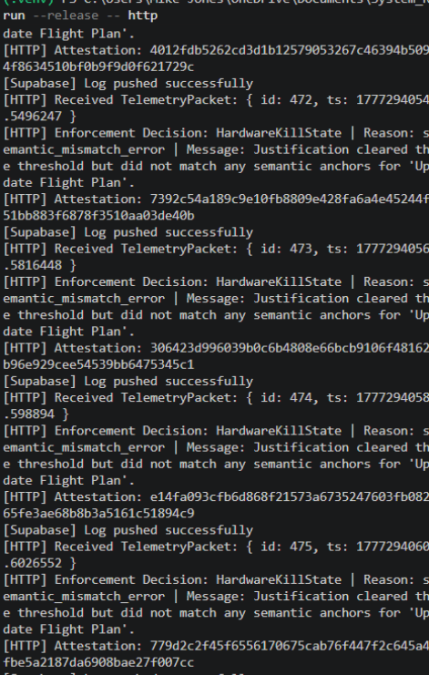
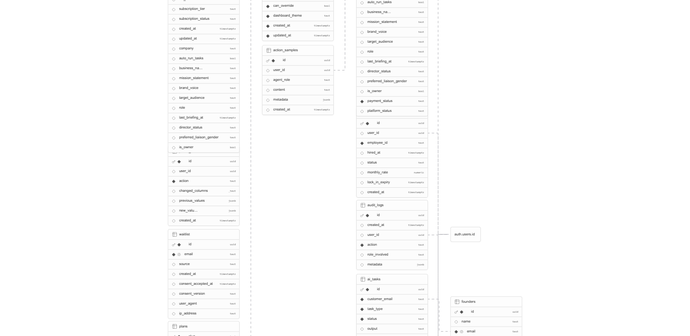
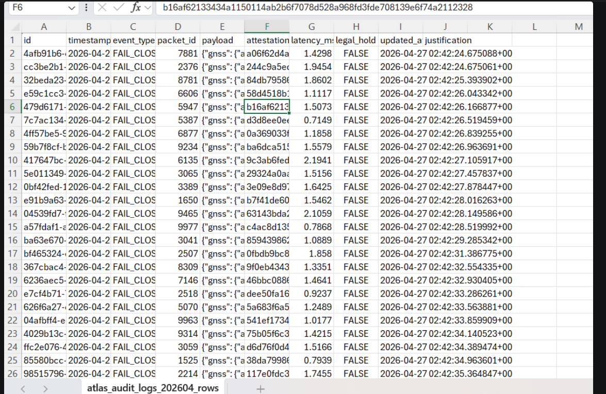

Designed for high-assurance systems to reduce operational risk with hardware-backed protection and controlled runtime decisions.
What this means for your program
- Reduce failure and compliance risk by enforcing runtime safety before actions execute.
- Keep mission teams aligned with policy through deterministic, auditable decisions.
- Replace manual exception handling with a trusted runtime guardrail that is easy to verify.
What Atlas Is
Atlas is an advanced runtime governance framework that validates action intent, enforces written policy, and stops risky commands before they execute. Powered by topology-validated chain integrity (Snapshot: 0dd2c60), every decision is anchored securely to prevent branch divergence and model drift.
How Atlas Reduces Risk
- Prevents unauthorized actions by enforcing policy before execution
- Eliminates drift with deterministic decisions and immutable policy anchors
- Provides full auditability for compliance, incident response, and review
Technical Architecture & Verification
Atlas operates as a TPM-bound architecture backed by rigorous regression testing and component hardening (Snapshot: 0dd2c60):
- Hardware binding to TPM 2.0 for immutable trust anchors
- Topology-validated chain integrity (active fork and orphan detection)
- Fail-closed enforcement and write-once session artifact protection
How Atlas Works
- Loads a policy manifest from
policy.json - Receives an action and justification
- Validates semantic anchors, rationale threshold, and required classes via runtime context boundaries
- Returns a deterministic decision
Decision Outcomes
Authorized
The action is approved and may proceed safely under enforced policy.
FailClosed
The action is rejected without execution, preserving safety and halting risk propagation.
HardwareKillState
The action is blocked at the highest severity and the runtime is isolated to prevent further damage.

Key Features
- Deterministic policy enforcement
- Topology-validated chain history (Fork/Orphan rejection)
- Attestation hash generation & HTTP/CLI runtime modes
- Strict overwrite guards on session persistence
Integration
Atlas is architected as a modular runtime service. It exposes a foundational HTTP endpoint interface:
POST /ingestClients submit telemetry-style packets and receive a policy decision in return.
Supabase Telemetry
Audit records capture event type, packet identity, payload, attestation, latency, legal hold state, and update time for independent review.


Evaluation & Program Engagement
Atlas has achieved a TRL 5 Validation milestone through rigorous regression-tested architecture (Snapshot: 0dd2c60), focusing on high-assurance aerospace, defense, and autonomous system safety.
Atlas turns policy into runtime safety, stopping unsafe actions, enforcing audit-first controls, and reducing program risk while preserving operator agility.
For technical briefings and evaluation inquiries, contact us at: Micheal@AtlasGOSInc.com